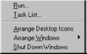

Welcome to Inchyea tips
Inchyeatips tips you about everyday lifestyle.Try here today.
Inchyeatips tips you about everyday lifestyle.Try here today.
BACK IN THE early days of what would eventually be named Windows 95, the taskbar didn’t have a Start button. (Later, you’ll learn that back in the early days of the project, the taskbar wasn’t called the taskbar.)
Instead of the Start button, three buttons were displayed in the lower-left corner : the System button (icon: the Windows flag), the Find button (icon: an eyeball), and the Help button (icon: a question mark). Find and Help are self-explanatory. The System button gave you this menu:

Over time, the Find and Help buttons eventually joined the System button menu, and the System button menu itself gradually turned into the Windows 95 Start menu. Some menu options such as Arrange Windows (which led to options such as Cascade Windows and Tile Windows Horizontally) moved to other parts of the user interface; others such as Task List vanished completely.
One thing kept showing up during usability tests as a major hurdle: People turned on the computer and just sat there, unsure what to do next.
That’s when someone got the idea of labeling the System menu Start. It says, “Psst. Click here.” With this simple change, the usability results improved dramatically because, all of a sudden, people knew what to click when they wanted to do something.
So why is Shut down on the Start menu?
When we asked people to shut down their computers, they clicked the Start button. Because, after all, when you want to shut down, you have to start somewhere.